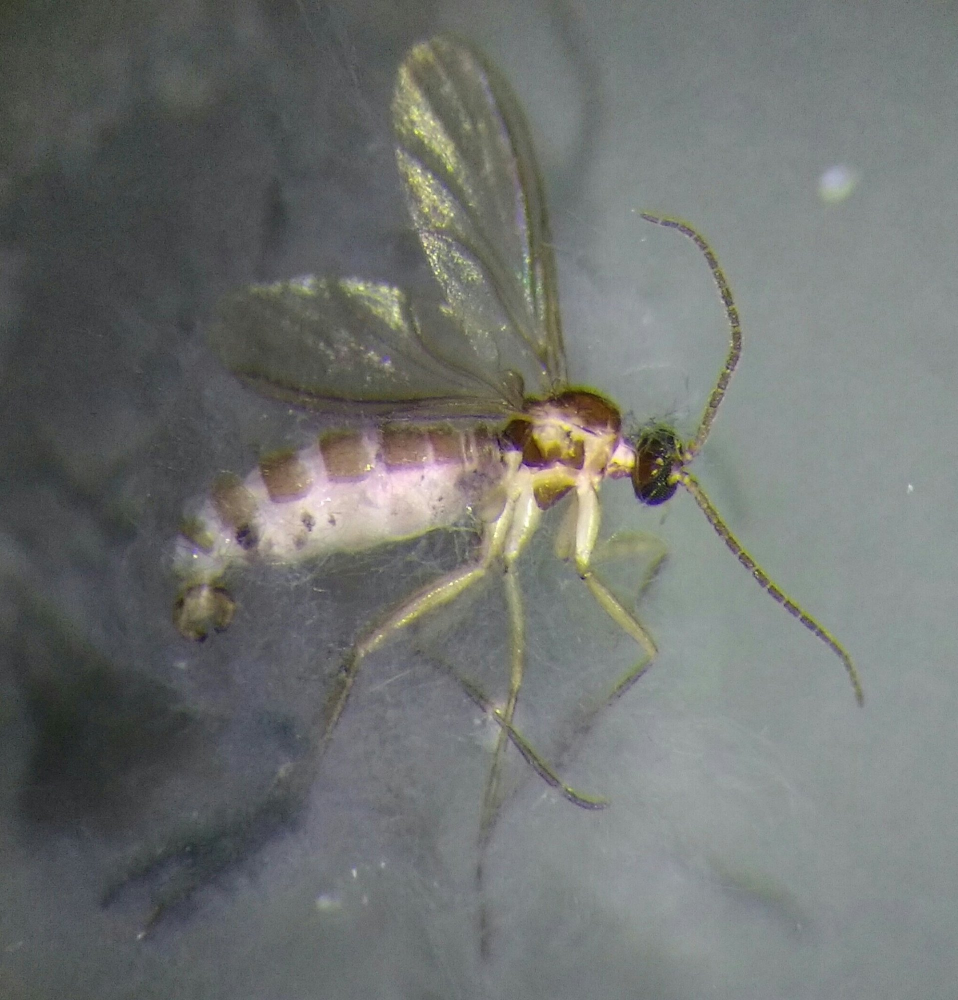
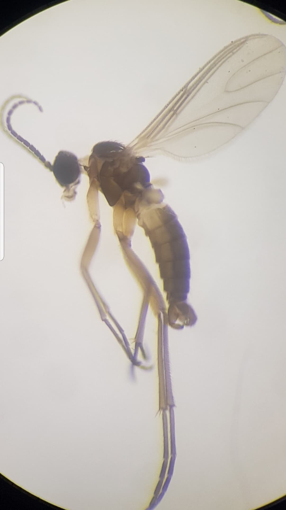
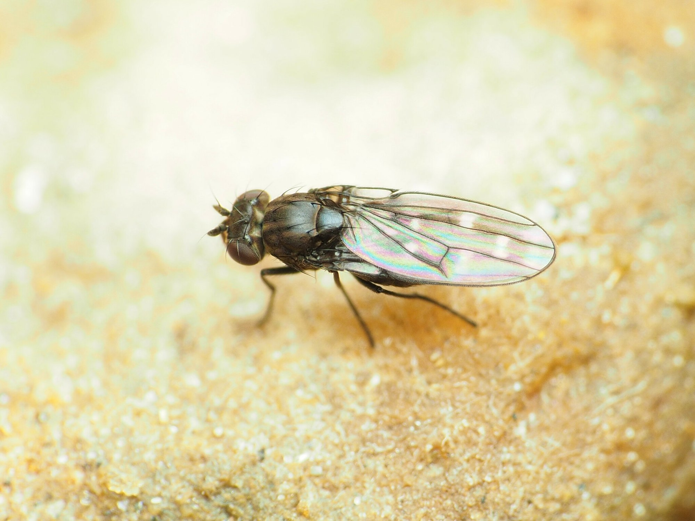

← Toutes les fiches · Ravageur · insecte
Bradysia spp., Corynoptera spp.



Les sciarides sont des mouches grises à noires de 3 à 4 mm, à longues pattes, à antennes filiformes et à grands yeux composés. L'adulte vole mal et se tient souvent à la surface du substrat. Chaque femelle vit environ 10 jours et pond environ 150 œufs blancs dans la matière organique. Les larves, blanches, de 4 à 6 mm, ont une tête noire luisante bien visible; elles se nymphosent dans le sol. Le cycle prend 21 jours à 24 °C et 38 jours à 16 °C. Les mouches du rivage sont plus trapues, volent mieux et portent quatre taches claires sur les ailes; leurs larves vivent aussi dans le sol.
Substrat trop arrosé, mauvais drainage, eau stagnante. Les mouches du rivage préfèrent des conditions encore plus humides, par exemple les zones mouillées sous les tables où poussent des algues, dont adultes et larves se nourrissent.
Pièges collants jaunes pour les adultes. Méthode du cours : morceau de pomme de terre enfoui pour les larves; pièges à 30 cm pour les adultes.
Toutes les cultures en substrat humide. Les mouches du rivage ne menacent pas directement les cultures, sauf les racines en système recirculé.
Sciarides et mouches du rivage sont mises en cause dans la dissémination de Fusarium, Verticillium et Rhizoctonia.
Fiche du guide Parcelle, version 2026-11-15b. Aucune recommandation de traitement. Les publications de l'Ontario sont écrites pour l'Ontario.